Глава 1. Введение в трёхмерное компьютерное зрение
Как читать эту главу. Она вводная, но не обзорная: к концу вы должны уметь не пересказать список представлений, а выбрать представление под задачу и оценить цену этого выбора. Через всю главу проходит один пример — обычная кружка на столе. Мы сфотографируем её, спросим, что значит «увидеть» её в трёх измерениях, и посмотрим, чем её можно описать.
Что нужно знать заранее: линейная алгебра (матрицы, SVD — на уровне «слышал»), основы обработки изображений, базовый Python. Всё специфическое вводится по ходу.
1.1. Что значит «видеть в трёх измерениях»
1.1.1. Два семейства вопросов
Компьютерное зрение принято определять как построение вычислительной модели зрительной системы — системы, отвечающей на вопросы об изображении. Полезно сразу разделить эти вопросы на два семейства.
Первое семейство — «что и где». На фотографии кухонного стола: здесь кружка, здесь ноутбук, здесь рука. Ответ — метка класса и область на изображении. Этим занимается семантическое зрение: классификация, детекция, сегментация. В нашей программе это отдельный курс, и мы его не повторяем.
Второе семейство — «какой формы, какого размера, где именно». Диаметр кружки — восемь сантиметров или двенадцать? Она стоит в сорока сантиметрах от камеры или в шестидесяти? Дотянется ли до неё манипулятор, у которого рабочая зона полметра? Ответ здесь — число в метрах, и его можно проверить рулеткой. Это метрическое зрение, и именно им занимается наш курс.
Разделение не искусственное. Оно отражает разную природу ответа: в первом случае ответ дискретный и проверяется согласием разметчиков, во втором — непрерывный и проверяется физическим измерением. Отсюда и разные метрики качества, и разные способы получить обучающие данные, и разные типичные ошибки.
1.1.2. Почему одного семейства мало
Роботу, которому поручено взять кружку, метка «кружка» бесполезна без ответа на вопрос «где именно и какого она размера». Автомобилю недостаточно знать, что впереди пешеход: нужно расстояние, скорость и габариты. Шлему дополненной реальности нужна геометрия комнаты, иначе виртуальный объект не будет корректно перекрываться реальной мебелью.
Поэтому современное трёхмерное зрение — это объединение обоих семейств:
3D-зрение = метрическое зрение + семантическое зрение.
Не «здесь машина», а «машина длиной 4.5 метра в семи метрах впереди, движется под углом 15°». Практическая формулировка: система должна выдавать величины, с которыми может работать планировщик движения или физический симулятор.
1.1.3. Исторический контекст: зрение начиналось с трёх измерений
Первой работой по компьютерному зрению обычно называют диссертацию Лоуренса Робертса (L. G. Roberts, Machine Perception of Three-Dimensional Solids, MIT, 1963). В ней по одной фотографии многогранника находились рёбра, а по рёбрам — трёхмерная модель объекта. То есть дисциплина начиналась именно с обратной задачи реконструкции, а не с распознавания.
Плоское зрение — более поздняя специализация, возникшая из-за ограничений вычислительных ресурсов и доступных данных. К 2020-м годам маятник качнулся обратно: нейронные поля, дифференцируемый рендеринг и feed-forward-модели вернули трёхмерную постановку в центр внимания.
Отдельного упоминания заслуживает Дэвид Марр (D. Marr, Vision, 1982), предложивший трёхуровневую схему зрительного восприятия: первичный эскиз (primal sketch) → 2½-мерный эскиз (2.5D sketch) → трёхмерная объектно-центрированная модель. Термин «2.5D», которым мы будем пользоваться в § 1.4.3, пришёл именно оттуда: это описание видимой поверхности в системе координат наблюдателя, ещё не полноценная трёхмерная модель.
1.2. Прямая задача: как из сцены получается изображение
1.2.1. Компоненты сцены
Чтобы понять, что мы восстанавливаем, полезно сначала описать, что мы наблюдаем. Изображение — результат работы четырёх компонент:
| Компонента | Что задаёт | Где изучается в курсе |
|---|---|---|
| Геометрия | форма поверхностей сцены | лекции 1, 11, 12 |
| Материалы | как поверхность отражает свет (BRDF) | лекция 8 |
| Освещение | откуда и сколько света приходит | лекция 8 |
| Камера | положение, ориентация, оптика, сенсор | лекции 3, 14 |
Эти четыре компоненты вместе с моделью распространения света определяют изображение однозначно. Формально яркость, уходящая из точки x в направлении ω, описывается уравнением рендеринга (Kajiya, 1986):
$$ L_o(\mathbf{x}, \boldsymbol\omega_o) \;=\; L_e(\mathbf{x}, \boldsymbol\omega_o) \;+\; \int_{\Omega} f_r(\mathbf{x}, \boldsymbol\omega_i, \boldsymbol\omega_o)\, L_i(\mathbf{x}, \boldsymbol\omega_i)\,(\boldsymbol\omega_i \cdot \mathbf{n})\, d\boldsymbol\omega_i . $$
Здесь $f_r$ — двулучевая функция отражательной способности (BRDF), $L_i$ — приходящая яркость, $\mathbf{n}$ — нормаль. Мы не будем решать это уравнение в первой лекции: оно нужно нам как формальная запись утверждения «прямая задача корректно поставлена». Подробно к нему вернёмся в лекции 8.
1.2.2. Проекция и потеря размерности
Геометрическая часть прямой задачи проще и важнее для нас прямо сейчас. Точка сцены $\mathbf{X} = (X, Y, Z)^\top$ в системе координат камеры проецируется в точку изображения
$$ u = f\frac{X}{Z} + c_x, \qquad v = f\frac{Y}{Z} + c_y , $$
где $f$ — фокусное расстояние в пикселях, $(c_x, c_y)$ — главная точка. В однородных координатах это записывается линейно, что и делает всю дальнейшую геометрию удобной; вывод — в лекции 3.
Ключевое здесь — деление на $Z$. Отображение $\mathbb{R}^3 \to \mathbb{R}^2$ необратимо: все точки луча, выходящего из центра камеры, дают один и тот же пиксель. Именно эта потеря размерности превращает зрение в трудную задачу.
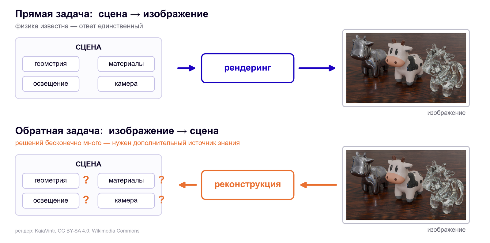
1.3. Обратная задача и её некорректность
Прямое отображение мы теперь умеем выписать, и оно вычислимо. Поставим обратную задачу явно: дано изображение $I$ (или набор $\{I_k\}$) — восстановить те четыре компоненты сцены, из которых оно получилось: геометрию, материалы, освещение и параметры камеры. Вопрос не в том, как считать, а в том, определяет ли $I$ свой прообраз вообще.
1.3.1. Корректность по Адамару
Задача называется корректно поставленной по Адамару, если решение существует, единственно и непрерывно зависит от входных данных. Обратная задача зрения нарушает как минимум второе условие: одному изображению соответствует бесконечное множество сцен.
Это не техническая сложность, которую снимут более быстрые компьютеры. Это свойство самой задачи, и оно определяет устройство всех методов курса: каждый метод — это способ доопределить недоопределённую задачу.
1.3.2. Три канонические неоднозначности
Глубина вдоль луча. Пиксель фиксирует направление, но не расстояние. Маленькая кружка близко и большая далеко дают одинаковую проекцию.
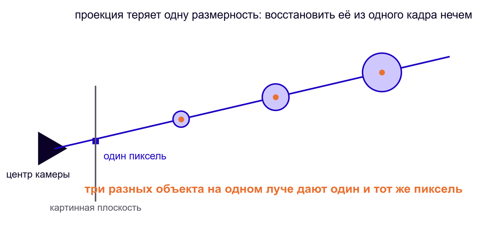
Масштаб. Даже если восстановить форму сцены по нескольким кадрам монокулярной камеры, останется неизвестным общий масштаб: увеличив сцену и расстояния между камерами в $s$ раз, мы получим в точности те же изображения. Формально семейство решений параметризовано группой подобия (7 степеней свободы: 3 поворота, 3 сдвига, 1 масштаб) — это то, что в лекции 5 будет называться gauge freedom при настройке связок. Устраняется масштаб только внешней информацией: известным размером объекта, базой стереопары, показаниями инерциального датчика.
Материал против освещения. Яркость пикселя — произведение отражательной способности на освещённость. Тёмная поверхность при ярком свете и светлая при тусклом дают одно и то же число. Разделение этих факторов (inverse rendering) требует дополнительных предположений.
Есть и более тонкие вырождения. Классический пример — бас-рельефная неоднозначность (Belhumeur, Kriegman, Yuille, 1999): при ламбертовой модели и ортографической проекции сжатие рельефа вдоль оси взгляда с одновременным преобразованием освещения даёт неотличимые изображения. Поэтому по затенению форма восстанавливается лишь с точностью до этого семейства.
1.3.3. Три источника доопределения
Все методы, которые мы разберём за пятнадцать недель, доопределяют обратную задачу одним из трёх способов — или их комбинацией.
1. Дополнительные наблюдения (геометрические ограничения). Второй кадр из другой точки даёт второй луч; пересечение лучей определяет точку. На этом стоит вся многовидовая геометрия: эпиполярное ограничение (лекция 4), триангуляция, structure from motion (лекция 5), плотная многовидовая реконструкция (лекция 12). Плата — необходимость знать или оценить взаимное положение камер и найти соответствия между кадрами.
2. Физические и геометрические приоры. Предположения о мире: поверхности гладкие, материалы ламбертовы, стены взаимно перпендикулярны («манхэттенский мир»), объекты стоят на плоскости. Классическое зрение построено на них: shape from shading, photometric stereo, оценка ориентации по точкам схода (лекция 3). Плата — приор может не выполняться, и тогда метод ошибается уверенно.
3. Выученные приоры. Статистика реального мира, извлечённая из данных. Монокулярная оценка глубины (лекция 11), генерация 3D (в нашем курсе — через дифференцируемый рендеринг, лекции 9–10), feed-forward-реконструкция вроде DUSt3R и VGGT. Плата — зависимость от распределения обучающих данных и трудность контроля ошибок.
Рамка курса. Полезно держать в голове таблицу «метод → чем доопределяет». Она объясняет, почему методы дают разные типы ошибок: геометрия ошибается там, где не хватает наблюдений; физические приоры — там, где мир не соответствует модели; выученные приоры — там, где сцена не похожа на обучающую выборку.
1.3.4. Современная форма: инверсия дифференцируемого рендерера
К 2020-м годам оформился общий вычислительный приём. Если прямую задачу (рендеринг) сделать дифференцируемой по параметрам сцены $\theta$, то обратную можно решать градиентным спуском:
$$ \theta^{*} \;=\; \arg\min_{\theta} \sum_{k} \big\| \mathcal{R}(\theta, \pi_k) - I_k \big\|^2 \;+\; \lambda\, \mathcal{P}(\theta), $$
где $\mathcal{R}$ — дифференцируемый рендерер, $\pi_k$ — параметры $k$-й камеры, $I_k$ — наблюдаемое изображение, $\mathcal{P}$ — регуляризатор (тот самый приор). NeRF, гауссовы сплаты, inverse rendering — частные случаи этой схемы; отличаются они выбором представления $\theta$ и устройством $\mathcal{R}$.
Чтобы эту схему запустить, надо сказать, чем именно является $\theta$ — какой структурой данных задана форма. От этого выбора зависит, какие операции вообще вычислимы: одна структура делает дешёвой проверку «внутри или снаружи», другая — вычисление нормали, третья — рендеринг. Универсальной структуры нет, поэтому следующий раздел разбирает их по очереди.
Одно требование к ним уже понятно из схемы выше: представление должно быть дифференцируемым, иначе градиент по $\theta$ не берётся. Это первая из осей, по которым мы будем их сравнивать.
1.4. Представления трёхмерной формы
1.4.1. Почему их много
В двумерном зрении нам повезло: есть одно универсальное представление — растр, матрица $W \times H \times C$. Его выдаёт любой сенсор, принимает любой алгоритм, показывает любой дисплей. Именно поэтому двумерная обработка так стандартизована: свёртка определена на растре, и вся архитектура нейронных сетей для изображений выросла из этого факта.
В трёх измерениях универсального представления нет, и, судя по всему, не будет. Причина не в незрелости области: разные операции над формой требуют принципиально разных структур данных. Быстро ответить, лежит ли точка внутри объекта, удобно по одной структуре; быстро найти пересечение с лучом — по другой; плавно деформировать — по третьей; обучать нейросеть — по четвёртой.
Поэтому полезно принять рабочее определение:
Представление — это структура данных вместе с множеством операций, которые она делает дешёвыми. Выбор представления — это выбор того, какие операции будут дешёвыми, а какие дорогими.
Ниже мы разберём основные представления, показывая каждое на одной и той же кружке.
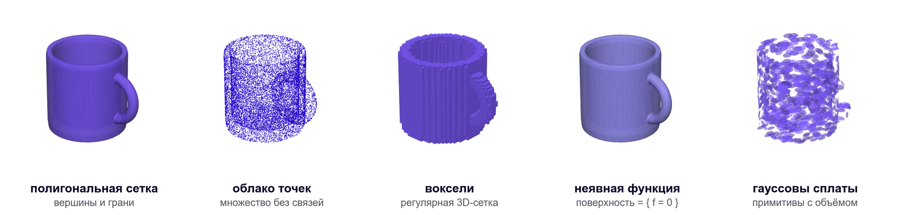
1.4.2. По каким осям сравнивать
В литературе по геометрической обработке (Botsch et al., Polygon Mesh Processing, гл. 1) принято различать представления по нескольким осям. Нам понадобятся следующие.
Две главные дихотомии. В обзорной литературе по нейронному рендерингу (Tewari et al., STAR 2022, § 3.1) классификация строится на двух независимых осях:
- поверхностные или объёмные — описываем ли мы только границу тела или всё пространство;
- явные или неявные — перечисляем ли точки поверхности или задаём функцию, чей нулевой уровень эту поверхность определяет.
Пересечение осей даёт четыре класса: явно-поверхностные (облака точек, сетки, параметрические поверхности), неявно-поверхностные (SDF, occupancy), объёмные дискретные (воксели, октодеревья, TSDF, MPI) и объёмные непрерывные (поля плотности, поля излучения). Между осями есть важная асимметрия, которую стоит проговорить сразу: объёмное представление способно описать поверхность, обратное неверно.
Порядок изложения дальше такой: сначала 2.5D, потому что это ближе всего к тому, что выдаёт сенсор, и к растру, с которого мы начали; потом явно-поверхностные; потом объёмные; и в конце инженерные, где поверхность задаётся точно. Границу между поверхностными и объёмными мы отметим отдельно, когда до неё дойдём.
Сигнал и структура данных — разные вещи. Полезная рамка из обзора Xie et al. (2022): представление есть поле $\Phi(\mathbf{x}; \Theta)$ — величина, определённая во всех точках пространства, — плюс способ хранить и запрашивать параметры $\Theta$. SDF, occupancy, плотность, радиантность, глубина — это сигналы; воксельная сетка, октодерево, хэш-таблица, MLP — это структуры данных, в которых сигнал живёт. Одна и та же occupancy может храниться в вокселях (запрос $O(1)$, память $O(n^3)$) или в MLP (память — число весов, запрос — полный проход сети). Смешивать эти уровни — частая путаница: «нейронное поле» противопоставляют «вокселям», хотя противопоставлять надо структуры хранения, а сигнал у них может быть один и тот же.
Лагранжево или эйлерово. Лагранжевы структуры (точки, вершины сеток, сплаты) «переносят» информацию вместе с собой при движении; эйлеровы (воксели, регулярные сетки) хранят значения в фиксированных узлах пространства. Это различие вернётся в лекции про динамические сцены.
Зависимость от ракурса. Карта глубины описывает только видимую с одной точки часть сцены; сетка или неявная функция — объект целиком.
Память по разрешению. Поверхность двумерна, поэтому представления, хранящие только поверхность, растут как $O(n^2)$ при увеличении линейного разрешения в $n$ раз; представления, хранящие объём, — как $O(n^3)$.
Топологическая свобода. Может ли представление изменить род поверхности (число «ручек») в ходе оптимизации? Для сеток сдвигом вершин — нет, пока сохраняется связность шаблона и нет склеек, схлопываний и самопересечений (§ 1.5); явной перестройкой связности — можно, но дорого. Для неявных функций — да.
Стоимость операций: тест «внутри/снаружи», пересечение с лучом (нужно рендерингу), ближайшая точка на поверхности (нужно метрикам и регистрации), сэмплирование точек, деформация, вычисление нормали.
Дифференцируемость. Можно ли получить градиент функции потерь по параметрам представления? Без этого представление не встраивается в схему § 1.3.4.
Пригодность для нейросетей. Регулярные структуры (растры, воксели) естественно обрабатываются свёртками; множества (облака точек) требуют инвариантности к перестановкам; сетки — операций на графах.
Редактируемость. Может ли человек править представление руками? Это отдельная ось, потому что она определяет, что примет от нас художник или инженер.
1.4.3. Карты глубины и представления 2.5D
Самое дружелюбное представление — карта глубины: растр, в единственном канале которого записано расстояние до ближайшей поверхности вдоль оптической оси, то есть координата $Z$ точки в системе камеры. Её стоит сразу отличать от дальности вдоль луча пикселя: у бокового пикселя это разные числа, и путаница даёт систематическую ошибку, растущую к краям кадра. Мы всюду пользуемся осевой глубиной, как это делают RGB-D-сенсоры и библиотеки вроде Open3D. Часто её объединяют с цветом — получается RGB-D. Работают все привычные инструменты обработки изображений, включая свёрточные сети; поэтому задача оценки глубины (лекция 11) так хорошо ложится на нейросетевые архитектуры.
Зная калибровку камеры $K$, карта глубины поднимается в трёхмерные точки обратной проекцией:
$$ \mathbf{X} = Z(u, v)\, K^{-1} \begin{pmatrix} u \\ v \\ 1 \end{pmatrix}, $$
где $Z(u,v)$ — осевая глубина в пикселе. Формула верна именно для неё: у вектора $K^{-1}(u,v,1)^\top$ третья координата равна единице, поэтому умножение на $Z$ ставит точку на нужную глубину. Если у вас записана дальность $D$ вдоль луча, надо нормировать направление: $\mathbf{X}=D\,K^{-1}(u,v,1)^\top/\|K^{-1}(u,v,1)^\top\|$. Вывод — лекция 3; пока достаточно заметить, что без $K$ карта глубины остаётся картинкой, а не геометрией.
Тем же способом кодируются другие геометрические свойства. Карта нормалей хранит в трёх каналах единичный вектор нормали, обычно в системе координат камеры и в кодировке $\text{RGB} = (\mathbf{n} + 1)/2$. Здесь важна деталь, о которой легко забыть: нормаль — это точка на единичной сфере $S^2$, а не три произвольных числа. Сеть, предсказывающая нормали, должна это учитывать; в лекции 2 ровно та же история повторится для вращений.
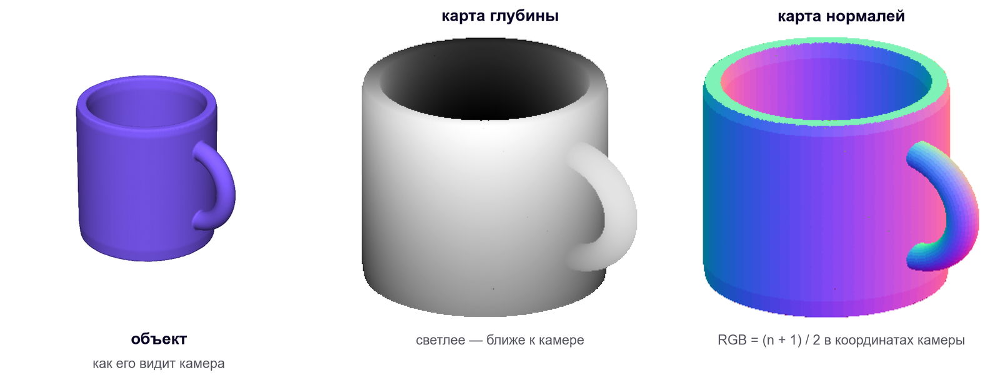
Термин 2½-мерный эскиз введён Марром и Нисихарой (Marr & Nishihara, 1978; Marr, Vision, 1982) как вторая из трёх стадий зрения: первичный эскиз → 2½D-эскиз → трёхмерная объектно-центрированная модель. По их определению, 2½D-эскиз представляет «ориентацию и глубину видимых поверхностей, а также разрывы» в системе координат наблюдателя. «Половина» здесь — не буквальная половина измерения: представлены только видимые поверхности, невидимые достраиваются на следующей стадии.
Аккуратная современная формулировка: 2.5D-представление — это функция на пиксельной решётке, одно значение на луч, то есть график $z = f(u, v)$ в системе координат наблюдателя. Оно принципиально не может представить самоокклюзии, обратную сторону объекта и несколько поверхностей вдоль одного луча. Чтобы получить полную модель, нужно несколько видов и процедура их слияния (лекция 12); зависимость от ракурса — первое из ограничений, по которым мы сравниваем представления (§ 1.4.2).
Замечание о терминологии: работы вроде MarrNet (Wu et al., 2017) называют «2.5D-эскизом» тройку {глубина, нормали, силуэт} — со ссылкой на Марра и с аргументом, что эти величины проще восстанавливать из RGB и они лучше переносятся с синтетики на реальные снимки.
Существуют расширения, хранящие вдоль луча больше одной точки. Layered Depth Image (Shade et al., 1998) записывает для каждого пикселя список пересечений луча с поверхностями — видимую и то, что за ней. Multi-Plane Image (Zhou et al., 2018) представляет сцену стопкой полупрозрачных плоскостей на фиксированных глубинах; новые виды синтезируются альфа-композитингом и работают хорошо при малых смещениях камеры. MPI исторически стал мостом от классического image-based rendering к нейронным полям.
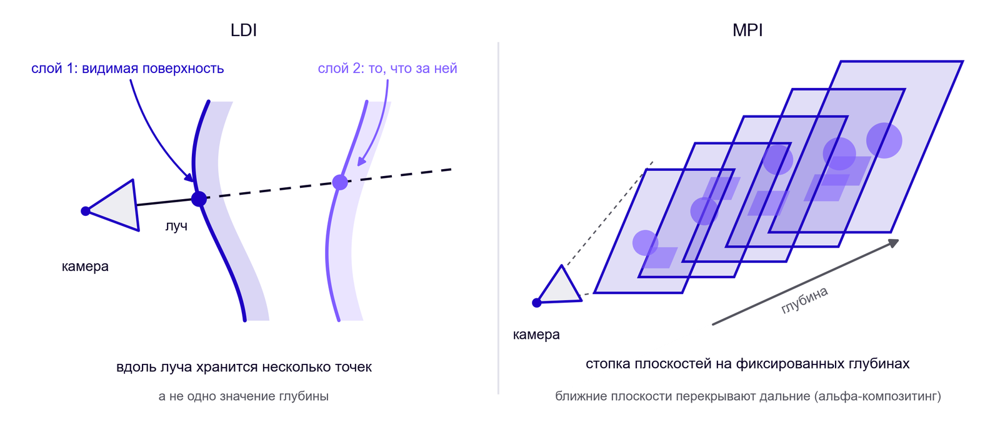
Свежий поворот той же идеи — point map (DUSt3R, Wang et al., 2024): сеть предсказывает для каждого пикселя не глубину в системе своей камеры, а трёхмерную точку в общей системе координат для пары кадров. Тем самым стирается граница между оценкой глубины и оценкой относительной позы камер: поза «зашита» в согласованность точек. К этому подходу курс вернётся в конце.
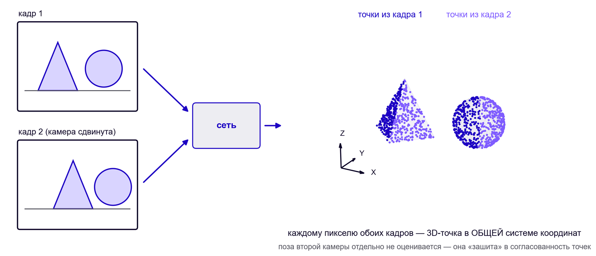
1.4.4. Облака точек
Облако точек $\{\mathbf{p}_i\}_{i=1}^N$, $\mathbf{p}_i \in \mathbb{R}^3$ — это то, что реально выдают сенсоры: лидар, времяпролётные камеры, структурированный свет, а также стерео и SfM после обратной проекции. Удобство в том, что можно забыть о природе сенсора и работать с однородной структурой.
Порядок точек не несёт смысла. Облако — множество, а не массив. Любой метод обработки обязан давать один и тот же ответ при перестановке точек, и свёртка по массиву этому требованию не удовлетворяет. Из этой простой инвариантности выросла целая линия архитектур, начиная с PointNet (Qi et al., 2017), где симметричная агрегация (max-pooling по точкам) обеспечивает инвариантность к перестановкам. Отсюда же ответ на частый вопрос «почему нельзя просто отсортировать точки»: сортировка неустойчива — малое смещение одной точки меняет порядок скачком.
Связности нет. Облако не знает, какие точки соседние. Почти любая обработка начинается с построения структуры соседства — kd-дерева или радиусного поиска, — то есть связность приходится восстанавливать заново на каждом шаге.
Ориентированное облако. Добавив к каждой точке единичную нормаль $\mathbf{n}_i$, мы локально аппроксимируем поверхность плоским диском — и этого уже достаточно, чтобы рендерить (splatting) и реконструировать. Нормаль оценивают по главным компонентам локальной окрестности: собственный вектор, отвечающий наименьшему собственному значению ковариационной матрицы соседей, задаёт направление нормали; само это значение — дисперсия точек вдоль нормали — растёт и от шума, и от кривизны окрестности. У этого способа есть принципиальный изъян: знак нормали не определён — плоскость не знает, где «наружу». Ориентацию согласовывают отдельно, распространяя знак по графу соседей; на первом семинаре вы убедитесь, что без такого согласования примерно половина нормалей смотрит внутрь.
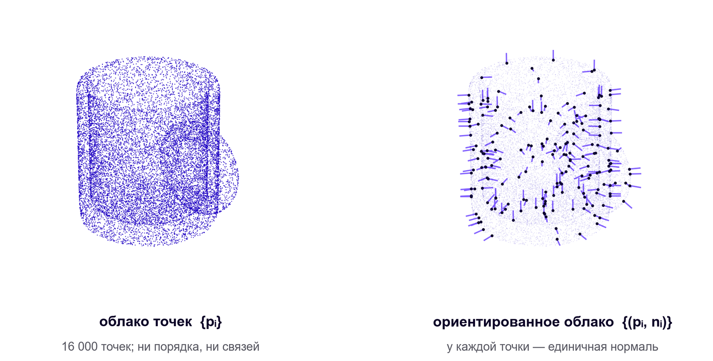
Забегая вперёд: гауссовы сплаты (§ 1.4.10) можно понимать как ориентированное облако, у которого каждый диск получил толщину, размер и прозрачность.
1.4.5. Полигональные сетки
Полигональная сетка — это список вершин $V$ и список граней $F$, каждая грань — упорядоченный набор индексов вершин. На практике почти всегда используют треугольные сетки: три точки всегда лежат в одной плоскости, четыре — уже нет. Это кусочно-линейная аппроксимация поверхности; точность растёт с числом вершин. Сетка — стандарт индустрии графики: всё, что рисуется в реальном времени, рисуется треугольниками (лекция 6).
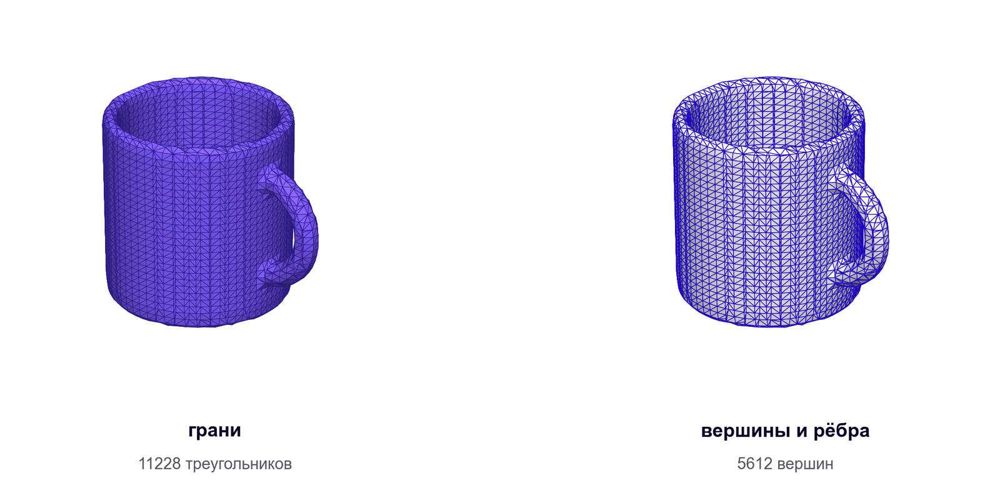
Порядок обхода вершин в грани задаёт направление нормали, то есть где «наружу». Отсюда отсечение задних граней в растеризации — и отсюда же вывернутые модели при ошибках экспорта. Хорошая сетка — многообразная (manifold): каждое ребро принадлежит ровно двум граням, окрестность каждой вершины устроена как диск. Многообразность нужна большинству алгоритмов обработки; сетки из сканеров и из marching cubes её обычно обеспечивают, сетки из игровых движков — не всегда.
Геометрия и внешний вид разделены. Форма хранится в сетке, цвет — в текстуре, связь между ними — через UV-координаты вершин. Это разделение делает сетки удобными для художников и одновременно источником трудностей при реконструкции: автоматически построить хорошую развёртку сложно.
Что дёшево и что дорого. Двигать вершины дёшево — на этом построены все параметрические модели тела и лица. Сглаживать, упрощать, уплотнять — есть зрелые алгоритмы. Изменить связность — дорого и неустойчиво; изменить топологию (число ручек) сдвигом вершин нельзя: пока сохраняется связность шаблона и нет склеек, схлопываний и самопересечений, род формы равен роду сетки. Это ограничение настолько важно, что мы посвятим ему отдельный § 1.5.
1.4.6. Параметрические поверхности
Поверхность можно задать как образ отображения из двумерной области: $f: \Omega \subset \mathbb{R}^2 \to \mathbb{R}^3$.
Здесь нужна аккуратность с топологией. Одной непрерывности мало: непрерывное отображение вправе склеивать точки, схлопывать куски области и порождать самопересечения. Стандартная параметризация тора непрерывно отображает прямоугольник, отождествляя противоположные стороны, — топология образа не совпала с топологией прямоугольника. Топология наследуется, только если $f$ — вложение, то есть взаимно однозначно и гомеоморфно на образ: тогда образ диска действительно поверхность рода 0 с краем. Корректная сшивка границ этого не гарантирует: даже одна заплата Безье с простой прямоугольной границей может самопересекаться внутри. Вложение приходится проверять отдельно — и для сплайнов, и для отображения, выданного нейросетью.
Классический пример — сплайновые поверхности. Поверхность Безье задаётся сеткой контрольных точек $\mathbf{k}_{ij}$ и полиномами Бернштейна:
$$ f(u, v) = \sum_{i=0}^{N} \sum_{j=0}^{M} B_i^N(u)\, B_j^M(v)\, \mathbf{k}_{ij}, \qquad B_i^N(u) = \binom{N}{i} u^i (1-u)^{N-i}. $$
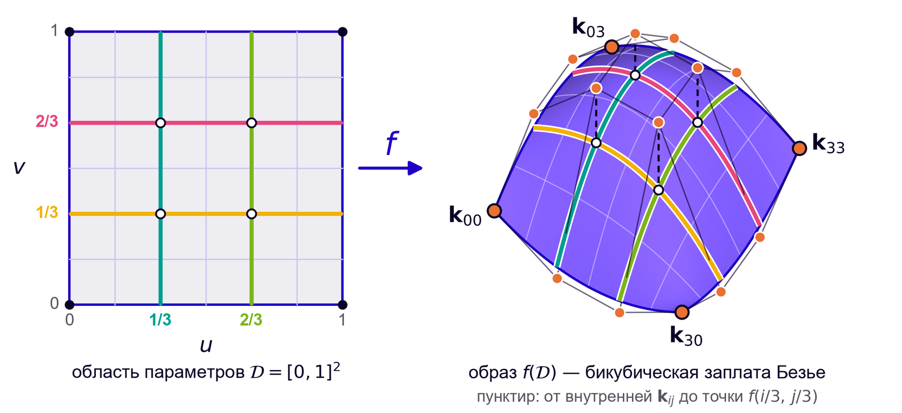
NURBS — рациональное обобщение с весами и узловыми векторами — язык промышленного CAD: поверхность там точная, а не аппроксимированная треугольниками; для показа на экране её тесселируют.
Ту же идею реализуют нейросетью: $f_\theta(u,v)$ с обучаемыми параметрами $\theta$ (AtlasNet, Groueix et al., 2018). Свойства параметризации показательны для нашей таблицы: сэмплировать точки на поверхности тривиально — достаточно взять случайные $(u, v)$; а вот ответить, лежит ли данная точка $\mathbf{q}$ внутри объекта, почти невозможно без дополнительных построений.
1.4.7. Воксели, октодеревья, TSDF
Воксельная сетка — самое прямое обобщение растра: регулярная трёхмерная решётка, в каждой ячейке которой хранится занятость $V[x,y,z] \in \{0, 1\}$, вероятность занятости или другое скалярное поле. Работают трёхмерные свёртки, всё привычно. Цена — память: объём растёт как $O(n^3)$.
Дальше важно, что именно считать занятым, иначе оценки расходятся. Если хранить оболочку — только ячейки, которые пересекает поверхность, — их всего $O(n^2)$, потому что поверхность двумерна, и доля занятых падает как $1/n$: при $16^3$ около 29 %, при $64^3$ около 8 %, при $512^3$ около процента. Если же хранить заполненное тело, занято $O(n^3)$ ячеек, и доля стремится не к нулю, а к доле объёма тела в габаритном параллелепипеде. У кружки стенка тонкая, но при достаточном разрешении это разницы не отменяет: тонкая стенка — это по-прежнему объём, а не поверхность.
Приведённые числа и рис. 1.10 относятся к поверхностной вокселизации. Сетка $512^3$ в float32 — полгигабайта на один объект в любом случае.
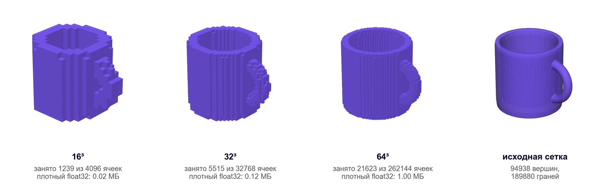
Очевидное лечение — адаптивное разрешение: мелкие ячейки только у поверхности. Октодерево рекурсивно делит куб на восемь, пока ячейка пересекает поверхность; память падает до $O(n^2)$ узлов: на уровень крупнее ячеек у поверхности вчетверо меньше, и сумму по уровням задаёт самый мелкий. Разреженные воксельные свёртки развивают ту же идею: считать только там, где что-то есть.
Отдельно стоит хэш-сетка признаков (Instant-NGP, Müller et al., 2022; лекция 10) — это не дерево. Там берут несколько регулярных решёток разного разрешения и хранят обучаемые векторы в таблицах фиксированного размера, куда индексируют хэшем; коллизии допускаются и разрешаются обучением. Экономия получается не от того, что ячейки дробятся у поверхности, а от того, что таблица заведомо меньше решётки. Поэтому и оценка памяти у неё своя, задаваемая размером таблицы, а не $O(n^2)$.
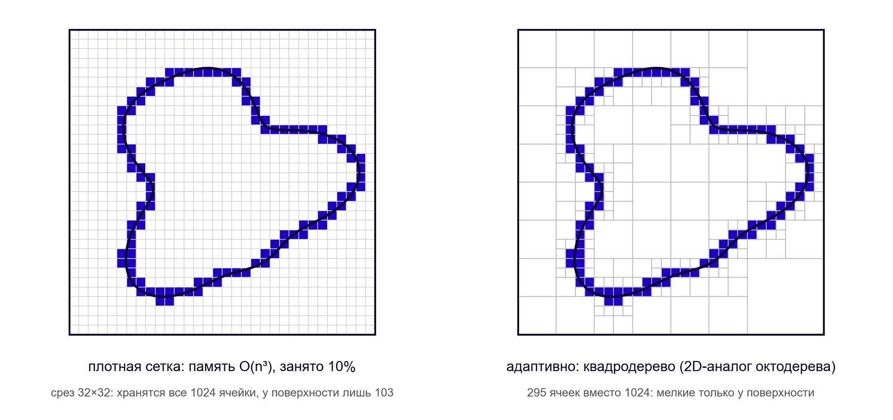
Особый и очень важный случай — TSDF (truncated signed distance function; Curless & Levoy, 1996). Здесь понадобится величина, которую мы подробно разберём в § 1.4.8: знаковое расстояние — это расстояние от точки до ближайшей точки поверхности, взятое со знаком минус внутри тела и плюс снаружи. Знак нужен именно для того, чтобы по одному числу было видно, с какой стороны поверхности мы находимся, и чтобы сама поверхность оказалась нулевым уровнем.
В каждой ячейке хранится не занятость, а усечённое знаковое расстояние до поверхности вместе с весом уверенности. Новая карта глубины вливается в объём взвешенным усреднением:
$$ D \leftarrow \frac{W D + w\, d}{W + w}, \qquad W \leftarrow W + w, $$
где $d$ — расстояние, наблюдённое в новом кадре (усечённое до $\pm\delta$), $w$ — его вес. Усреднение подавляет шум сенсора, а усечение не даёт далёким поверхностям мешать друг другу. На TSDF построен KinectFusion (Newcombe et al., 2011) и большинство систем плотной реконструкции в реальном времени; к ней вернёмся в лекциях 12 и 15.
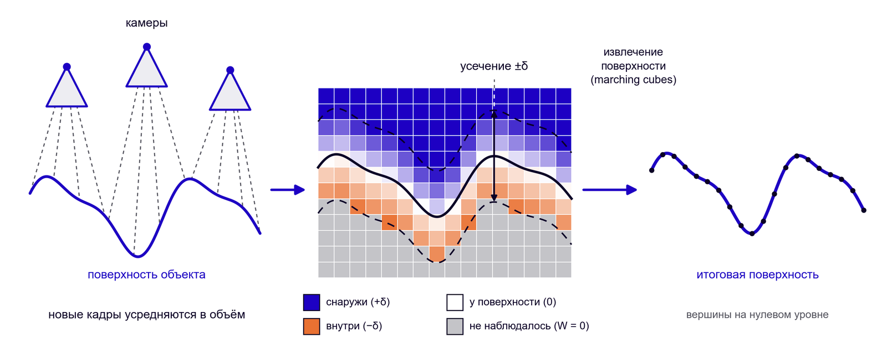
1.4.8. Неявные функции: occupancy и SDF
Перевернём логику. Вместо перечисления точек поверхности зададим функцию $f: \mathbb{R}^3 \to \mathbb{R}$, поверхность которой — множество нулевого уровня:
$$ \mathcal{S} = \{\, \mathbf{p} \in \mathbb{R}^3 : f(\mathbf{p}) = 0 \,\}. $$
Строго говоря, нулевой уровень — частный случай: поверхностью объявляют множество $\{f=c\}$, и $c$ зависит от того, что именно хранит поле.
Способ задать $f$ — отдельный вопрос от того, что она означает. Её можно хранить таблицей на сетке, задать аналитически (примитивы и их булевы комбинации) или нейросетью (DeepSDF — Park et al., 2019; Occupancy Networks — Mescheder et al., 2019). Таблица на сетке сама по себе не делает поле TSDF: в ячейках может лежать занятость, плотность, неусечённое знаковое расстояние или что угодно ещё. TSDF — это конкретный выбор: знаковое расстояние, усечённое на несколько ячеек около поверхности, и в RGB-D-конвейерах туда обычно интегрируют проективное расстояние вдоль луча, которое вдали от поверхности с точным евклидовым не совпадает.
Два распространённых выбора функции:
- Occupancy $o(\mathbf{p}) \in [0, 1]$ — вероятность того, что точка внутри объекта; поверхность — изоуровень $\{o=\tau\}$, канонически $\tau=\tfrac12$.
- Знаковое расстояние (SDF) $f(\mathbf{p})$ — расстояние до поверхности со знаком: по нашему соглашению отрицательное внутри материала, положительное снаружи.
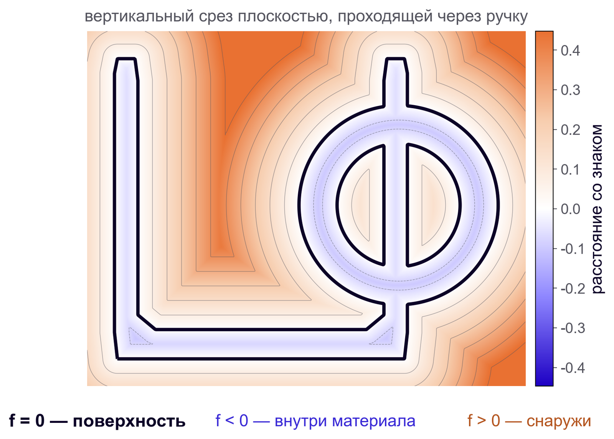
Рис. 1.13. Знаковое расстояние в вертикальном сечении кружки через ручку: поверхность — жирная линия нулевого уровня, внутри стенки и ручки $f < 0$, снаружи и в полости чашки $f > 0$.
Что мы получаем «бесплатно» — и для какого поля:
- тест «внутри/снаружи» — у SDF это знак $f$; у occupancy — сравнение $o$ с порогом $\tau$. Уровень $\{o=\tau\}$ и есть поверхность модели, граница решения классификатора; при $\tau=\tfrac12$ там же классификатор наименее уверен, и одно другому не мешает. Расстояния до поверхности значение $o$ не говорит;
- нормаль — у SDF $f$, отрицательной внутри, внешняя нормаль $\mathbf{n} = \nabla f / \|\nabla f\|$, а настоящая SDF почти всюду удовлетворяет уравнению эйконала $\|\nabla f\| = 1$ (градиента нет на медиальной оси, где ближайших точек поверхности несколько, и на острых рёбрах и вершинах самой поверхности), и нормаль равна просто $\nabla f$. У гладкой occupancy $o$, большей внутри, градиент смотрит внутрь, поэтому внешняя нормаль равна $-\nabla o / \|\nabla o\|$. На самой поверхности нужно $\nabla o \neq 0$; вдали от неё сигмоида насыщается, градиент численно исчезает, и его направлению доверять нельзя. К бинарной занятости градиентная формула неприменима;
- длина безопасного шага вдоль луча — полезная только у SDF: у точной SDF $|f|$ равно расстоянию до поверхности, и шаг на $|f|$ её не проскакивает; на этом стоит sphere tracing (Hart, 1996). Хватает и консервативной оценки: если поле обнуляется на поверхности и $L$-липшицево, безопасен шаг $|f|/L$ (у точной SDF $L=1$). Обученная сеть с эйкональным штрафом точной SDF не становится, гарантии нет, и на практике шаг уменьшают. Для $o-\tau$ оценка формально та же, но снаружи $|o-\tau|\le\tau$, а $L$ у occupancy велика из-за резкого перехода у границы, так что шаг выходит ничтожным, и его берут вслепую;
- свобода топологии: непрерывно меняется само поле, а род поверхности-уровня меняется скачком, когда уровень проходит через критическую точку поля. Перестраивать связность вручную не нужно, хотя само изменение поля не обязано быть малым. Это верно для обоих полей;
- разрешение не фиксировано — но только у аналитического и нейросетевого задания. У поля, хранимого таблицей, остаются шаг сетки и модель интерполяции, то есть своё разрешение никуда не девается.
Бинарная занятость — это знак SDF, и ничего больше. Формально индикатор $\chi(\mathbf{p}) = [\,f(\mathbf{p}) < 0\,]$ сохраняет только знаковую часть информации, содержащейся в знаковом расстоянии. Обучаемая occupancy $o(\mathbf{p}) \in [0,1]$ — не сам индикатор, а его гладкая вероятностная модель. Отсюда следуют все практические различия при обучении.
Occupancy — это классификация. Функция потерь — бинарная кросс-энтропия, поверхность — граница решения классификатора. Задача проще регрессии, структурных ограничений на функцию нет. Но вдали от поверхности сигмоида насыщается: градиент не говорит, где поверхность и в какую сторону до неё идти. Порог для извлечения поверхности приходится подбирать на валидации, а не брать равным $\tfrac12$ по умолчанию.
SDF — это регрессия с дифференциальным ограничением. Настоящее знаковое расстояние обязано удовлетворять уравнению эйконала $\|\nabla f\| = 1$. Это и цена (оптимизировать сложнее), и выигрыш: значение говорит, насколько далеко поверхность, градиент — в какую сторону; отсюда нормали $\mathbf{n} = \nabla f$, безопасный шаг при трассировке (у обученной сети — с оговорками выше) и честная линейная интерполяция при извлечении сетки. Эйкональная регуляризация позволяет учить SDF прямо по сырым точкам с нормалями, без эталонных расстояний (IGR, Gropp et al., 2020).
Требования к данным. Здесь легко смешать свойство представления со способом обучения, поэтому разделим. Если размечать поле напрямую, по эталонной модели, то определённость «внутри и снаружи» нужна, а значит, нужны замкнутые (watertight) эталоны: так учат DeepSDF по эталонному SDF и Occupancy Networks по эталонной занятости. Для незамкнутых поверхностей в этой схеме берут беззнаковое расстояние.
Но сама по себе SDF замкнутых эталонов не требует. IGR (Gropp et al., 2020) учится по сырым точкам с нормалями, а NeuS (Wang et al., 2021) и родственные методы — вообще по многовидовым изображениям, через дифференцируемый рендеринг. Так что «учиться по фотографиям» не является исключительным свойством поля плотности.
Поле плотности (§ 1.4.9) в NeRF выбрано не потому, что больше нечем учиться по снимкам, а потому что оно даёт простую и устойчиво дифференцируемую модель рендеринга: вдоль луча интегрируется непрерывная величина без разрывов на границе. Расплата — отсутствие ограничений на поверхность и шумная геометрия при её извлечении, из-за чего и появились SDF-варианты вроде NeuS.
Усечение. На практике метричность SDF нужна только вблизи поверхности: и TSDF Curless–Levoy, и обрезанная функция потерь DeepSDF ($|\operatorname{clamp}(f,\delta) - \operatorname{clamp}(s,\delta)|$) реализуют одну и ту же идею — далеко от поверхности точное расстояние не нужно.
Цена неявного представления — извлечение. Чтобы показать поверхность или отдать её в физический движок, нужно либо построить сетку (marching cubes, § 1.6.2), либо трассировать лучи. Обе операции заметно дороже, чем перечисление вершин.
1.4.9. Поля плотности и излучения
Для дыма, тумана, облаков понятие поверхности теряет смысл: есть плотность в объёме $\sigma(\mathbf{p}) \geq 0$. То же представление оказалось исключительно удобным для нейронного рендеринга — потому что оно гладко и дифференцируемо всюду, без выделенной поверхности.
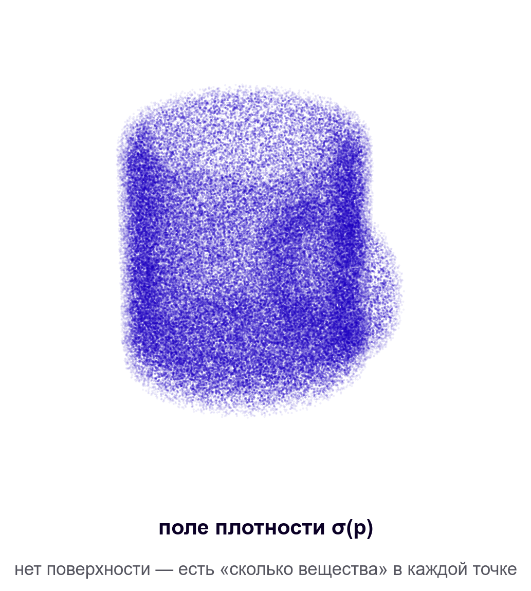
NeRF (Mildenhall et al., 2020) задаёт сцену функцией $(\mathbf{p}, \mathbf{d}) \mapsto (\sigma, \mathbf{c})$: плотность и цвет, зависящий ещё и от направления взгляда $\mathbf{d}$, закодированы в многослойном перцептроне. Цвет пикселя получается интегрированием вдоль луча $\mathbf{r}(t) = \mathbf{o} + t\mathbf{d}$; в дискретной форме с отсчётами $t_i$ и промежутками $\delta_i = t_{i+1} - t_i$:
$$ C(\mathbf{r}) = \sum_{i} T_i \big(1 - e^{-\sigma_i \delta_i}\big)\, \mathbf{c}_i, \qquad T_i = \exp\Big(-\sum_{j < i} \sigma_j \delta_j\Big). $$
Величина $T_i$ — пропускание среды до $i$-го отсчёта. Формула дифференцируема по всем $\sigma_i$ и $\mathbf{c}_i$, а значит и по весам сети, — и это именно то свойство, ради которого выбрано представление. NeRF существует как метод ровно потому, что рендеринг сделали дифференцируемым; детали объёмного рендеринга — лекция 9.
1.4.10. Гауссовы сплаты
3D Gaussian Splatting (Kerbl et al., 2023) возвращается к явному представлению: сцена — набор трёхмерных гауссиан, каждая с центром $\boldsymbol\mu_k$, ковариацией $\Sigma_k$, непрозрачностью $\alpha_k$ и цветом (коэффициенты сферических гармоник, чтобы цвет зависел от направления).
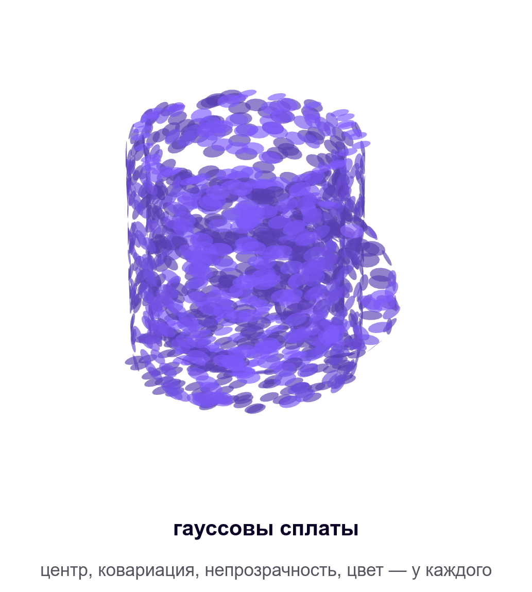
Плотность гауссианы
$$ G_k(\mathbf{p}) = \exp\!\Big(-\tfrac{1}{2} (\mathbf{p} - \boldsymbol\mu_k)^\top \Sigma_k^{-1} (\mathbf{p} - \boldsymbol\mu_k)\Big), \qquad \Sigma_k = R_k S_k S_k^\top R_k^\top, $$
где разложение на вращение $R_k$ и масштаб $S_k$ гарантирует положительную определённость при оптимизации. Рендеринг — проекция гауссиан на картинную плоскость и альфа-композитинг отсортированных по глубине сплатов:
$$ C = \sum_{k} \mathbf{c}_k\, \alpha_k' \prod_{j < k} (1 - \alpha_j'), $$
что по структуре совпадает с дискретным объёмным рендерингом NeRF, но выполняется растеризацией, а не трассировкой лучей, — отсюда выигрыш в скорости на порядок. Число сплатов не фиксировано: в ходе оптимизации гауссианы клонируются и делятся там, где градиенты велики, и удаляются, где прозрачны. Лекция 10.
В терминах нашей таблицы: сплаты — лагранжевы (переносят себя), явные, дифференцируемые, с лёгкой деформацией и без явной поверхности (её извлечение — отдельная задача).
1.4.11. Инженерные представления: B-rep и CSG
Инженерный мир живёт в других представлениях, и различие важно для всех задач «скан → CAD».
B-rep (boundary representation) хранит две вещи: геометрию — точные поверхности (плоскости, цилиндры, NURBS-заплаты), кривые и точки — и топологию — как грани, рёбра и вершины связаны между собой, где границы и отверстия. Это точное описание, а не аппроксимация.
CSG (constructive solid geometry) описывает тело деревом булевых операций над примитивами: объединение, пересечение, вычитание. Компактно, точно, легко редактировать.
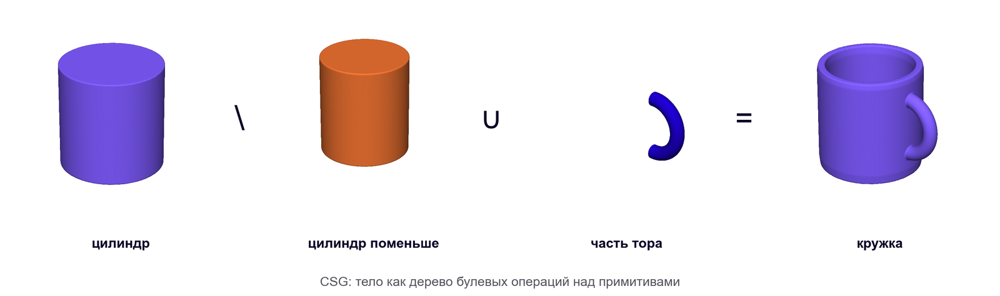
Современные CAD-модели хранят ещё и историю построения: последовательность операций (эскиз, вытягивание, скругление) с параметрами. Меняя параметр операции, инженер меняет деталь. Именно поэтому задача обратной разработки так трудна: восстановить надо не форму, а замысел конструктора — последовательность, которая её породила.
1.4.12. Сводная таблица
| Представление | Память | Внутри / снаружи | Луч | Сэмплирование поверхности | Деформация | Смена топологии | Дифференцируемость | Вход для нейросети |
|---|---|---|---|---|---|---|---|---|
| Карта глубины | $O(n^2)$ | нет | тривиально | легко | — | — | да | отлично (растр) |
| Облако точек | $O(n^2)$ | нет | сложно | тривиально | легко | легко | да | нужна инвариантность к перестановкам |
| Полигональная сетка | $O(n^2)$ | если замкнута | быстро | легко | легко | сдвигом вершин — нет (§ 1.5); перестройкой связности — дорого | частично | графовые операции |
| Параметрическая | мало | трудно | численно | тривиально | легко | нет, если $f$ — вложение; иначе не контролируется | да | да |
| Воксели | $O(n^3)$ | тривиально | просто | средне | тяжело | легко | да | отлично (3D-свёртки) |
| Октодерево | $O(n^2)$ | тривиально | просто | средне | тяжело | легко | да | хорошо |
| SDF | любая | по знаку | sphere tracing | нужно извлечение | легко | бесплатно | да | отлично |
| Occupancy | любая | по порогу $\tau$ | шаг вслепую и бисекция | нужно извлечение | легко | бесплатно | да | отлично |
| Поле плотности | любая | нет понятия | интеграл | нет понятия | легко | бесплатно | да | отлично |
| Гауссовы сплаты | $O(n^2)$ | нет | растеризация | легко | легко | легко | да | хорошо |
| B-rep / CAD | мало | точно | аналитически | точно | параметром | операцией | нет | плохо |
Таблицу стоит читать не по строкам, а по задачам. Физической симуляции столкновений нужны быстрый тест «внутри/снаружи» и замкнутость — это воксели, SDF или замкнутая сетка. Генератору мебели нужна свобода топологии и дифференцируемость — неявные функции. Скану здания для замеров нужны точность и компактность — облако точек или сетка с текстурой. Ответ определяется задачей, а не наоборот.
1.5. Топология: что нельзя изменить деформацией
1.5.1. Эйлерова характеристика и род
Для замкнутой ориентируемой поверхности, представленной сеткой с $V$ вершинами, $E$ рёбрами и $F$ гранями, величина
$$ \chi = V - E + F $$
называется эйлеровой характеристикой и не зависит от того, как именно поверхность триангулирована. Она связана с родом $g$ — числом «ручек» — формулой $\chi = 2 - 2g$. Сфера: $\chi = 2$, $g = 0$. Тор: $\chi = 0$, $g = 1$. Двойной тор: $\chi = -2$, $g = 2$.
Считая $\chi$ по сетке, нужно считать рёбра как уникальные неупорядоченные пары вершин: в замкнутой многообразной сетке каждое ребро принадлежит ровно двум граням, поэтому наивная оценка $3F$ даёт ровно вдвое больше. На первом семинаре вы проверите это на сфере и торе.
Род — топологический инвариант: он не меняется ни при каком непрерывном взаимно-однозначном преобразовании. Кружку с ручкой можно непрерывно «перетечь» в тор, и это не шутка топологов, а точное утверждение: у обоих объектов $g = 1$. А вот в сферу кружку так превратить нельзя.
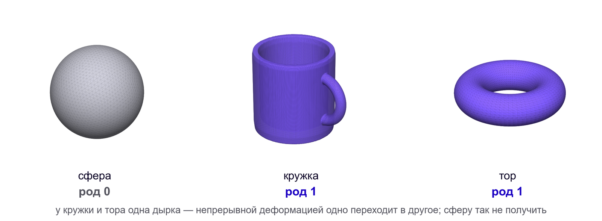
Предостережение о словах: топологическая «дырка» — это сквозное отверстие (ручка), а не полость. Полость чашки, в которую наливают чай, топологически ничем не отличается от вмятины на сфере.
1.5.2. Следствие для методов реконструкции и генерации
Многие методы восстанавливают форму, деформируя шаблон: берут сферу и двигают её вершины, пока проекции не совпадут с наблюдениями (Pixel2Mesh, Wang et al., 2018). Пока сохраняется связность шаблона и нет склеек, схлопываний и самопересечений, род результата равен роду сферы, то есть нулю. Поэтому кружку с ручкой как корректную поверхность такой метод не построит никогда — не «построит плохо», а принципиально не сможет. Изобразить ручку он может только ценой склеек или самопересечений, и тогда сетка уже не задаёт тело однозначно: где стенка прошла сквозь стенку, тест чётности пересечений луча даёт пустоту, а порог обобщённого winding number (§ 1.6.4) даёт тело с ручкой. Но граница такого тела — уже новая поверхность рода 1, полученная сменой представления, а не деформацией сферы.
Нейросетевая заплата вроде AtlasNet — другой случай. Квадрат топологически диск, но отображение $f_\theta$ ничем не ограничено и вправе склеить его стороны, как параметризация тора из § 1.4.6. Топологию её образа не гарантирует ничто.
Обходные пути существуют: несколько заплат (AtlasNet), шаблон подходящего рода, операции явного изменения связности. Все они неустойчивы или требуют знать топологию заранее. Именно здесь неявные представления получают решающее преимущество: у нулевого уровня функции $f$ род выпадает автоматически из значений функции и меняется скачком при критическом событии, хотя сама $f$ меняется непрерывно. Это главная причина, по которой современные генеративные методы формы (лекции 9–10) работают с неявными функциями, плотностями и сплатами, а не с сетками.
1.6. Переходы между представлениями
1.6.1. Карта конвертаций
Раз универсального представления нет, ключевым становится вопрос переходов между ними. Плохая новость: для каждой пары нужен свой метод, и общего решения не существует. Хорошая: основных переходов немного, и они хорошо изучены.
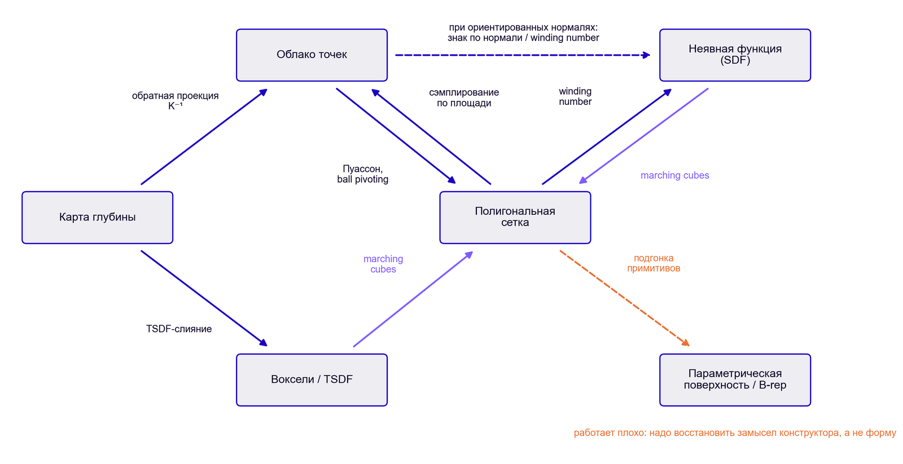
- Карта глубины → облако точек: обратная проекция (§ 1.4.3); нужна калибровка $K$.
- Карты глубины → TSDF: слияние взвешенным усреднением (§ 1.4.7); нужны позы камер.
- Облако → сетка: реконструкция поверхности (§ 1.6.3); Пуассону и ball pivoting нужны ориентированные нормали, триангуляции Делоне и альфа-формам — нет.
- Сетка → облако: сэмплирование по площади (§ 1.6.4).
- Сетка → SDF: расстояние до ближайшего треугольника, знак по нормали или по winding number (§ 1.6.4).
- Облако → SDF: расстояние до ближайшей точки даёт лишь беззнаковое расстояние до выборки; знак появляется после согласования ориентации нормалей или после реконструкции поверхности (§ 1.6.3–1.6.4).
- SDF или воксели → сетка: marching cubes (§ 1.6.2).
- Сетка → B-rep: подгонка примитивов; работает плохо, потому что восстанавливать нужно замысел, а не форму.
1.6.2. Marching cubes
Извлечение сетки из скалярного поля на регулярной решётке — самый частый переход в курсе; он понадобится и для TSDF, и для нейронных SDF, и для NeRF. Алгоритм marching cubes (Lorensen & Cline, 1987) обходит ячейки решётки; в каждой ячейке знаки поля в восьми углах определяют один из $2^8 = 256$ случаев (по симметрии — 15 базовых), для которых заранее заготовлены треугольники. Положение вершины на ребре ячейки между углами $a$ и $b$ находится линейной интерполяцией:
$$ \mathbf{p} = \mathbf{p}_a + \frac{f_a}{f_a - f_b}\,(\mathbf{p}_b - \mathbf{p}_a). $$
Формула записана для нулевого уровня. Для occupancy, где поверхность — изоуровень $\tau$, в неё подставляют $\tau-o$: тогда поле, как и SDF, отрицательно внутри, и при бинарных значениях $o_a=0$, $o_b=1$ и $\tau=0{,}5$ получается ровно середина ребра.
Отсюда важное следствие: точность извлечённой поверхности определяется не только шагом решётки, но и тем, насколько поле линейно внутри ячейки. Для честного знакового расстояния интерполяция находит пересечение почти точно; для бинарной occupancy интерполировать нечего — каждая вершина встаёт на долю $\tau$ длины ребра от угла с $o=0$ (при $\tau=0{,}5$ — на середину) независимо от того, где поверхность на самом деле, и результат получается ступенчатым. Это ещё один аргумент в пользу SDF.
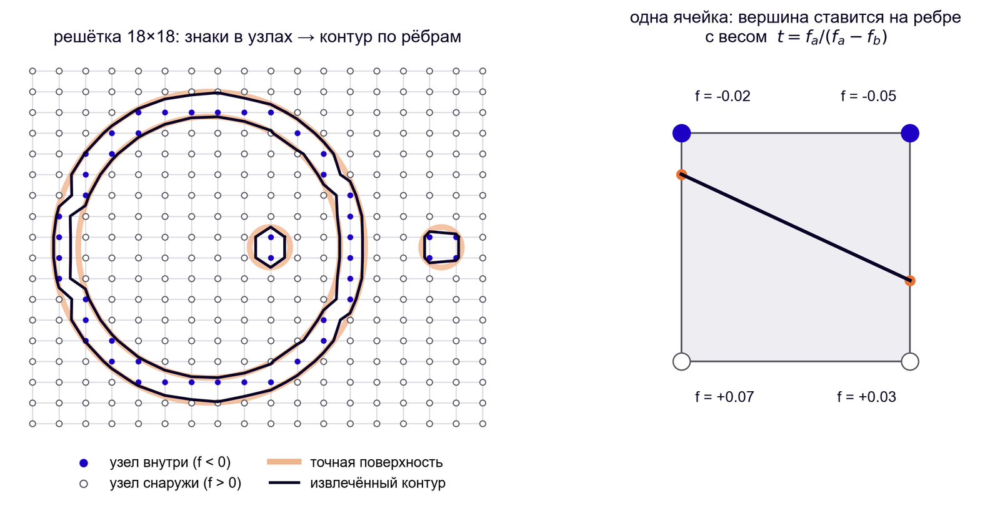
Ограничения. Детали мельче ячейки исчезают.
Вторая проблема тоньше и стоила авторам таблицы нескольких лет. Сведение 256 конфигураций к 15 по симметрии оказалось некорректным, но причина не в том, что смена знака меняет поверхность: множества $\{f=0\}$ и $\{-f=0\}$ совпадают буквально, знак лишь меняет местами внутренность и внешность. Дело в другом: одних знаков в вершинах недостаточно, чтобы выбрать правильную связность. На неоднозначной грани, где знаки идут в шахматном порядке, два угла одного знака можно соединить двумя разными способами, и какой из них верен, определяется уже значениями поля, а не их знаками. Соседние ячейки решают это независимо и могут выбрать по-разному — тогда в поверхности появляется трещина. Это исправляют расширенные таблицы (MC33) и правило асимптотического разделителя. Наконец, сетка получается избыточно плотной и требует упрощения. Дальнейшие развития — dual contouring, сохраняющий острые рёбра, и дифференцируемые варианты (§ 1.6.5).
1.6.3. Реконструкция поверхности по облаку точек
Обратная задача в миниатюре: дано облако точек с шумом — построить поверхность. Три семейства методов:
Пуассоновская реконструкция (Kazhdan et al., 2006) ищет индикаторную функцию $\chi$ объекта, градиент которой совпадает с полем ориентированных нормалей $\mathbf{V}$, решая уравнение Пуассона $\Delta \chi = \nabla \cdot \mathbf{V}$; поверхность извлекается как уровень $\chi$. Метод глобальный и всегда даёт замкнутую поверхность — в том числе там, где точек не было. Это не ошибка, а свойство: метод «галлюцинирует» геометрию в дырах, и на практике результат обрезают по плотности точек.
Ball pivoting (Bernardini et al., 1999) катит шар заданного радиуса по точкам и соединяет те тройки, на которые он опирается. Метод локальный: ничего не выдумывает, честно оставляет дыры там, где данных нет, но чувствителен к выбору радиуса относительно плотности точек.
Методы вычислительной геометрии — триангуляция Делоне, альфа-формы — не требуют нормалей вообще, но проходят точно через шумные точки и потому проигрывают на реальных сканах.
Общее для первых двух: нужны ориентированные нормали. Нормаль, оценённая по главным компонентам, определена с точностью до знака; без согласования ориентации Пуассон выдаёт кашу (а в некоторых реализациях — аварийно завершается). На семинаре вы измерите это: после оценки нормалей «наружу» смотрит примерно половина.
1.6.4. Дешёвые переходы, в которых всё равно можно ошибиться
Сетка → облако. Взять вершины сетки — неверно: их плотность отражает работу мешера, а не форму. Правильно сэмплировать точки пропорционально площади граней: выбрать грань с вероятностью, пропорциональной её площади, а затем равномерную точку внутри треугольника. Равномерность обеспечивает барицентрика со «квадратным корнем»: при $u, v \sim U(0,1)$ точка $(1-\sqrt{u})\,A + \sqrt{u}(1-v)\,B + \sqrt{u}\,v\,C$ распределена равномерно; без корня точки скучиваются у одной вершины.
Сетка → SDF. Модуль — расстояние до ближайшего треугольника. Знак — либо по нормали ближайшей точки (быстро, ошибается в вогнутых складках), либо по обобщённому winding number (Jacobson et al., 2013) — надёжно и на несовершенных сетках, но дороже.
Облако → SDF: расстояние до точек не даёт ни знака, ни поверхности. Расстояние до ближайшей точки облака — это беззнаковое расстояние до выборки, а не до поверхности: оно неотрицательно и обращается в ноль на самих отсчётах, а не на восстановленной поверхности между ними. Ни знака, ни понятия внутренности из него не возникает. Чтобы дойти до SDF, нужен промежуточный шаг: либо восстановить поверхность (Пуассону и ball pivoting для этого нужны ориентированные нормали, альфа-формам нет, § 1.6.3) и считать знак уже от неё, либо согласовать ориентацию нормалей облака и определять знак по ним, приняв дополнительные предположения о замкнутости.
Соглашение о знаке. В этой главе снаружи $f > 0$, внутри $f < 0$; в части библиотек
(например, в trimesh.proximity.signed_distance) — наоборот. Перепутанный знак — классический
источник вывернутых наизнанку моделей.
1.6.5. Дифференцируемые конвертации
Две современные идеи. Первая — сделать саму конвертацию дифференцируемой: DMTet (Shen et al., 2021) и FlexiCubes (Shen et al., 2023) извлекают сетку из неявного поля так, что градиент функции потерь, посчитанной на сетке, проходит обратно в поле. Это позволяет учить представление в одном виде, а супервизию брать в другом.
Вторая — композиция: если прямого перехода нет, собрать его из известных. Так, из гауссовых сплатов сетку получают, отрендерив сцену с многих ракурсов и восстановив её заново многовидовой реконструкцией.
1.7. Как измерять качество
1.7.1. Chamfer distance и F-score
Сравнивать две сетки напрямую нельзя — у них разная триангуляция. Сравнивают выборки точек. Пусть $A$ — точки эталона, $B$ — точки реконструкции, $d(\mathbf{x}, Y)$ — расстояние от точки до ближайшей точки множества $Y$.
Chamfer distance (симметричная, в $L_2$):
$$ \mathrm{CD}(A, B) = \frac{1}{|A|}\sum_{a \in A} d(a, B) + \frac{1}{|B|}\sum_{b \in B} d(b, A). $$
Первое слагаемое измеряет полноту (всё ли из эталона воспроизведено), второе — точность (нет ли в реконструкции лишнего). Их полезно репортить и по отдельности.
F-score при пороге расстояния $\tau$ (не путать с изоуровнем occupancy из § 1.4.8) — гармоническое среднее precision и recall:
$$ P(\tau) = \frac{|\{ b \in B : d(b, A) < \tau \}|}{|B|}, \qquad R(\tau) = \frac{|\{ a \in A : d(a, B) < \tau \}|}{|A|}, \qquad F(\tau) = \frac{2\,P(\tau)\,R(\tau)}{P(\tau) + R(\tau)}. $$
Chamfer чувствителен к выбросам — одна улетевшая точка портит среднее; F-score — нет, он просто считает долю точек в пределах порога. Поэтому в статьях по реконструкции почти всегда приводят оба.
Три оговорки, без которых число бессмысленно.
Chamfer — не метрика в математическом смысле: она нарушает неравенство треугольника. Кроме того, она сравнивает множества точек и ничего не знает о связности поверхности: две реконструкции с одинаковым CD могут быть очень разными как поверхности.
Единой конвенции не существует. Встречаются $L_1$ и $L_2$, квадраты расстояний и корни, суммы и средние, множитель $\tfrac12$ и сумма двух направлений. DeepSDF считает квадратичный CD по 30 тысячам точек, Occupancy Networks — $L_1$ по 100 тысячам, Mesh R-CNN — по 10 тысячам. Числа из разных статей несравнимы, пока не указаны конвенция, число точек и нормировка масштаба.
Хорошая метрика не означает реконструкцию. Татарченко и соавторы (2019) показали, что на ShapeNet простой baseline «кластеризация плюс поиск ближайшей формы в базе» сравним по CD и IoU с современными сетями: метрика поощряет распознавание категории, а не восстановление конкретной геометрии. Там же — про IoU: низкие и средние значения плохо отражают сходство форм, потому что IoU определяется в основном внутренностью объекта, а не поверхностью.
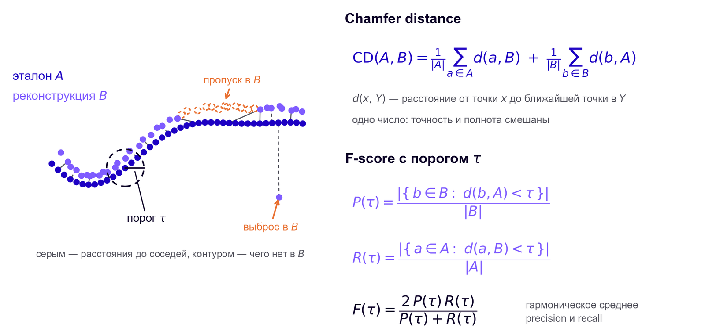
1.7.2. У Chamfer есть пол
Chamfer между двумя независимыми выборками одной и той же поверхности не равен нулю: он примерно равен среднему расстоянию между соседними точками, то есть порядка $\sqrt{S/N}$, где $S$ — площадь поверхности, $N$ — число точек. В собственных единицах модели, где диагональ габаритного параллелепипеда равна $3{,}85$, площадь нашей кружки равна $13{,}6$, и при $N=50\,000$ формула даёт $\approx0{,}016$. Если нормировать диагональ на единицу, как советует чек-лист ниже, площадь делится на квадрат диагонали и становится $\approx0{,}92$, а пол опускается до $\approx0{,}0043$ — именно это значение и нарисовано на рис. 1.21.
Следствие: пока геометрическая ошибка $\varepsilon$ (отклонение от эталонной поверхности по нормали, см. ниже) заметно меньше шага выборки $h\approx\sqrt{S/N}$, Chamfer к ней почти нечувствителен: прирост над полом растёт не как $\varepsilon$, а примерно как $\pi\varepsilon^2/h$, и при $\varepsilon=0{,}1h$ это лишь около 3 % пола, который сам заметно меняется с $N$. При малых $N$ этот прирост вдобавок сравним со случайным разбросом от выбора точек. Пол — характерный масштаб, а не жёсткий предел различимости. Сравнивать Chamfer из разных статей, посчитанные при разном числе точек, бессмысленно. Всегда указывайте $N$, порог $\tau$ и нормировку (обычно на диагональ ограничивающего параллелепипеда).
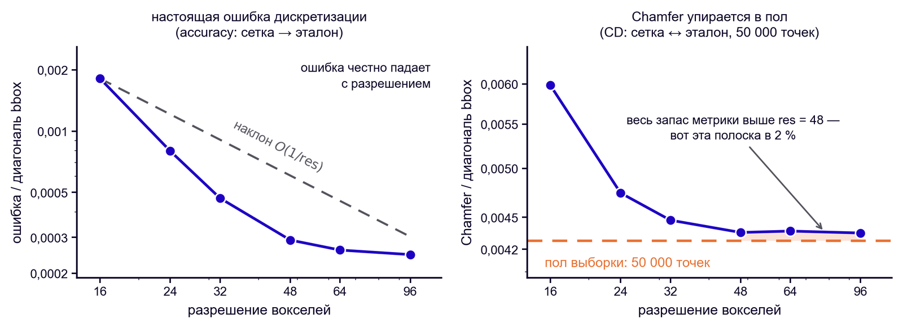
Этот эффект хорошо виден на примере из работы Брунса и Йенсфельта (2022): эталонная кружка без ручки сравнивается с двумя реконструкциями, у которых ручки разные. Относительная разница между ними по Chamfer сильно меняется с числом сэмплов, а для сходимости CD нужно очень много точек. По словам авторов, «бо́льшая часть ошибки происходит из разреженного сэмплирования, а не из реальных различий геометрии». F-score на тех же сетках сходится существенно быстрее.
Чтобы видеть саму геометрическую ошибку, измеряют точность напрямую: среднее точное расстояние от точек реконструкции до эталонной поверхности (точка–треугольник), без выборки на эталоне. У такой метрики пола нет.
Практический чек-лист при публикации чисел: указать конвенцию (L1/L2, среднее/сумма), число точек на каждой стороне, способ сэмплирования (по площади, а не по вершинам), порог $\tau$ и нормировку, а также способ выравнивания и масштабирования — реконструкция из SfM определена лишь с точностью до подобия (§ 1.3.2), и без регистрации сравнивать нечего.
1.7.3. Метрики для рендеринга
Когда представление оценивается по синтезированным изображениям (лекции 9–10), используют PSNR (пиковое отношение сигнал/шум, логарифм обратной MSE), SSIM (структурное сходство) и LPIPS (расстояние в пространстве признаков нейросети, лучше согласующееся с восприятием). Они измеряют внешний вид, а не геометрию: сцена может рендериться безупречно при неверной форме.
1.8. Системы координат: главный источник ошибок
Половина потерянных часов в трёхмерном зрении — не математика, а соглашения. Различаются они по двум независимым признакам: куда смотрят оси и левая тройка или правая.
| Библиотека | «Вверх» | «Вперёд» | Тройка |
|---|---|---|---|
| OpenCV, COLMAP — камера | $-Y$ | $+Z$ | правая |
| OpenGL, Blender — камера | $+Y$ | $-Z$ | правая |
| glTF — камера | $+Y$ | $-Z$ | правая |
| glTF — ассет | $+Y$ | $+Z$ | правая |
| Blender — мир | $+Z$ | $+Y$ | правая |
| ROS | $+Z$ | $+X$ | правая |
| Unity | $+Y$ | $+Z$ | левая |
Две строки про glTF не опечатка: спецификация задаёт ассету «перёд» вдоль $+Z$, а камера в нём смотрит вдоль локальной $-Z$. Unity же левая, и это не частность: переход к ней меняет знак у нечётного числа осей, то есть является отражением, а не вращением. Ровно про такой случай речь в § 2.2.7 главы 2.
Переход между соглашениями OpenCV и OpenGL для камеры — умножение на $\operatorname{diag}(1,-1,-1)$. Эта матрица ортогональна и имеет определитель $+1$, то есть является законным вращением на $180°$ вокруг оси $X$. Поэтому ни одна библиотека не выдаст предупреждения: все проверки пройдут и объём не изменится.
Тут стоит сказать прямо, чего эта матрица не делает. Согласованная смена системы координат физическую сцену не переворачивает: если пересчитать и точки, и оси, кружка останется стоять как стояла, изменится только запись. Перевёрнутой она оказывается тогда, когда преобразование применили к точкам, а оси интерпретировали по-старому, — то есть смену базиса случайно выполнили как активный поворот.
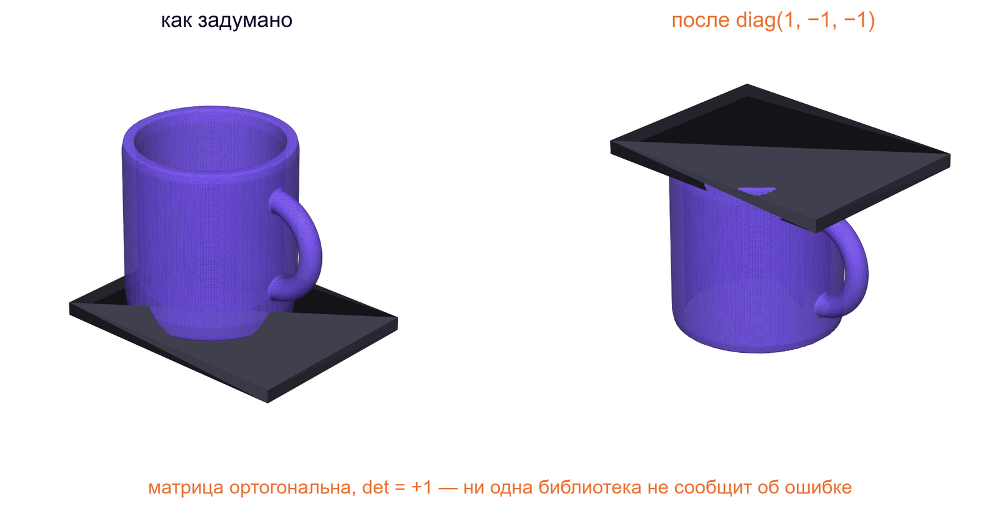
Два практических правила, которые стоит соблюдать с первого семинара:
- Когда данные пересекают границу между библиотеками (OpenCV → Open3D → nerfstudio → Blender → COLMAP), явно фиксируйте в коде, в какой системе координат они находятся.
- Называйте преобразования так, чтобы имя содержало направление: $T_{wc}$ переводит из координат камеры в мировые, $T_{cw}$ — наоборот. Матрица «позы камеры» и матрица «вида» — взаимно обратные, и путаница между ними — вторая по частоте ошибка после знака SDF.
1.9. Что значит «увидеть в трёх измерениях»
Глава открылась этим вопросом, и теперь на него есть ответ, собранный из трёх её частей.
Восстановить сцену по изображению однозначно нельзя: прямое отображение теряет размерность, и одному снимку отвечает бесконечное семейство сцен. Это свойство задачи, а не нехватка вычислений, и три конкретные неоднозначности из § 1.3.2 его предъявляют.
Значит, «увидеть» — это выбрать один ответ из этого семейства, а выбрать можно только по информации, которой в изображении нет. Откуда её брать, перечислено в § 1.3.3: ещё наблюдения, физические приоры, выученные приоры. Всякий метод реконструкции — это один из трёх источников или их смесь, и ошибается он ровно там, где выбранный источник неприменим.
И выбранный ответ надо где-то держать. Чем именно — не деталь реализации: от структуры данных зависит, какие операции дёшевы, что можно посчитать градиентом и какую ошибку вы вообще сможете измерить. Об этом § 1.4 и § 1.7.
Так что ответ на вопрос главы состоит из двух решений, и обе половины курса — про них: чем доопределяем и чем представляем.
1.10. Карта курса
Всё, что появилось в этой главе, вернётся в следующих лекциях в развёрнутом виде.
| Тема этой главы | Где развивается |
|---|---|
| Проекция и потеря размерности (§ 1.2.2) | Лекция 3: модель камеры, калибровка |
| Нормали и вращения как точки на многообразии (§ 1.4.3) | Лекция 2: SO(3), кватернионы, оптимизация на многообразии |
| Доопределение вторым видом (§ 1.3.3) | Лекции 4–5: эпиполярная геометрия, SfM |
| Рендеринг сеток и лучей (§ 1.2.1) | Лекции 6–8: растеризация, трассировка, освещение |
| Инверсия дифференцируемого рендерера (§ 1.3.4), NeRF и сплаты (§ 1.4.9–1.4.10) | Лекции 9–10 |
| Карты глубины и 2.5D (§ 1.4.3) | Лекция 11: оценка глубины |
| TSDF, marching cubes, реконструкция по облаку (§ 1.4.7, 1.6) | Лекция 12: многовидовая реконструкция |
| Point map (§ 1.4.3) | Лекция 14 и заключение: feed-forward реконструкция |
| Октодеревья и карты (§ 1.4.7) | Лекция 15: SLAM |
Полезно держать в голове и обратную карту: каждая последующая лекция — это выбор представления из таблицы § 1.4.12 плюс способ доопределить обратную задачу из § 1.3.3.
Шпаргалка
Проекция и обратная проекция.
$$ u=f\frac{X}{Z}+c_x,\qquad v=f\frac{Y}{Z}+c_y,\qquad \mathbf{X}=Z(u,v)\,K^{-1}\begin{pmatrix}u\\ v\\ 1\end{pmatrix}. $$
$Z(u,v)$ — осевая глубина, координата $Z$ точки в системе камеры; формула верна именно для неё, потому что у вектора $K^{-1}(u,v,1)^\top$ третья координата равна единице. Для дальности $D$ вдоль луча нормируют направление: $\mathbf{X}=D\,K^{-1}(u,v,1)^\top/\|K^{-1}(u,v,1)^\top\|$; путаница даёт ошибку, растущую к краям кадра. Без $K$ карта глубины остаётся картинкой. 2.5D хранит одно значение на луч и потому не представляет самоокклюзии, обратную сторону и несколько поверхностей вдоль луча (§ 1.2.2, 1.4.3).
Неоднозначности и доопределение. Обратная задача некорректна по Адамару: нарушена как минимум единственность (§ 1.3.1). Три канонические неоднозначности: глубина вдоль луча; масштаб — решения монокулярной реконструкции образуют семейство подобия с 7 степенями свободы, масштаб снимается только внешней информацией (размер объекта, база стереопары, инерциальный датчик); материал против освещения. Тоньше — бас-рельеф при ламбертовой модели и ортографической проекции (§ 1.3.2). Источники доопределения и где каждый ошибается: наблюдения — где их не хватает; физические приоры — где мир не соответствует модели; выученные приоры — где сцена не похожа на обучающую выборку (§ 1.3.3). Инверсия дифференцируемого рендерера $\theta^{*}=\arg\min_{\theta}\sum_{k}\|\mathcal{R}(\theta,\pi_k)-I_k\|^2+\lambda\,\mathcal{P}(\theta)$, где $\mathcal{P}$ — приор, требует дифференцируемого представления $\theta$ (§ 1.3.4).
Выбор представления. Представление — структура данных вместе с множеством операций, которые она делает дешёвыми (§ 1.4.1). Оси сравнения (§ 1.4.2): поверхностное или объёмное (объёмное способно описать поверхность, обратное неверно); явное или неявное; сигнал (SDF, occupancy, плотность, глубина) отдельно от структуры хранения (воксели, октодерево, хэш-таблица, MLP); лагранжево или эйлерово; зависимость от ракурса; память $O(n^2)$, если хранится только поверхность, и $O(n^3)$, если объём; топологическая свобода; стоимость операций (внутри/снаружи, луч, ближайшая точка, сэмплирование, деформация, нормаль); дифференцируемость; пригодность для нейросетей; редактируемость. Таблицу § 1.4.12 читают по задаче, а не по строкам.
Облако и нормаль по PCA. Порядок точек смысла не несёт: ответ метода не должен меняться при перестановке (PointNet добивается этого симметричной агрегацией, max-pooling по точкам), а сортировка не спасает — малое смещение точки меняет порядок скачком. Нормаль — собственный вектор ковариационной матрицы соседей с наименьшим собственным значением; само значение — дисперсия вдоль нормали, растёт и от шума, и от кривизны. Знак не определён: без согласования ориентации по графу соседей примерно половина нормалей смотрит внутрь (§ 1.4.4, 1.6.3).
Топология. Для замкнутой ориентируемой поверхности $\chi=V-E+F=2-2g$: сфера $\chi=2$, тор $\chi=0$, двойной тор $\chi=-2$. Рёбра считают как уникальные неупорядоченные пары вершин: в замкнутой многообразной сетке каждое ребро принадлежит двум граням, и наивное $3F$ вдвое больше $E$. «Дырка» — сквозная ручка, а не полость. Сдвиг вершин шаблона сохраняет род, пока сохраняется связность и нет склеек, схлопываний и самопересечений; параметризация наследует топологию области, только если $f$ — вложение; у уровня неявной функции род меняется скачком, когда уровень проходит через критическую точку поля (§ 1.4.5–1.4.6, 1.4.8, 1.5).
Воксели и октодерево. Плотная сетка хранит $O(n^3)$ ячеек при любой занятости: $512^3$ в float32 — полгигабайта. Оболочка (ячейки, которые пересекает поверхность) — $O(n^2)$ ячеек, доля занятых падает как $1/n$; заполненное тело — $O(n^3)$, доля стремится к доле объёма тела в габаритном параллелепипеде. Октодерево делит ячейку, пока её пересекает поверхность: $O(n^2)$ узлов: на уровень крупнее ячеек у поверхности вчетверо меньше, и сумму по уровням задаёт самый мелкий. Хэш-сетка признаков — не дерево, её память задаёт размер таблицы (§ 1.4.7).
Слияние TSDF.
$$ D\leftarrow\frac{WD+w\,d}{W+w},\qquad W\leftarrow W+w . $$
$D$ и $W$ — хранимые в ячейке усечённое знаковое расстояние и вес, $d$ — расстояние, наблюдённое в новом кадре и усечённое до $\pm\delta$, $w$ — его вес. Усреднение подавляет шум, усечение не даёт далёким поверхностям мешать друг другу. Таблица на сетке сама по себе не TSDF; в RGB-D-конвейерах обычно интегрируют проективное расстояние вдоль луча, которое вдали от поверхности с евклидовым не совпадает (§ 1.4.7–1.4.8).
SDF против occupancy. Поверхность: $\{f=0\}$ у SDF, $\{o=\tau\}$ у occupancy, канонически $\tau=\tfrac12$, но порог подбирают на валидации. Знак в главе: внутри $f<0$, снаружи $f>0$; в части библиотек (trimesh.proximity.signed_distance) наоборот (§ 1.4.8, 1.6.4).
$$ \mathbf{n}=\frac{\nabla f}{\|\nabla f\|},\qquad \mathbf{n}=-\frac{\nabla o}{\|\nabla o\|}. $$
У настоящей SDF $\|\nabla f\|=1$ почти всюду, и $\mathbf{n}=\nabla f$; градиента нет на медиальной оси и на острых рёбрах и вершинах поверхности. У гладкой occupancy, большей внутри, градиент смотрит внутрь; на поверхности нужно $\nabla o\neq0$, вдали сигмоида насыщается и направлению градиента доверять нельзя; к бинарной занятости формула неприменима. Бинарная занятость $[f<0]$ — только знак SDF. Occupancy учат как классификацию (кросс-энтропия), SDF — как регрессию с эйкональным ограничением. Разметка поля напрямую по эталону (DeepSDF, Occupancy Networks) требует замкнутых эталонов; сама SDF их не требует: IGR учит её по сырым точкам с нормалями. Sphere tracing: если поле обнуляется на поверхности и $L$-липшицево, шаг $|f|/L$ поверхность не проскакивает; у точной SDF $L=1$ и шаг равен $|f|$. Сеть с эйкональным штрафом точной SDF не становится: гарантии нет, шаг уменьшают. Для $o-\tau$ оценка формально та же, но снаружи $|o-\tau|\le\tau$, а $L$ велика, шаг ничтожен; идут вслепую с бисекцией (§ 1.4.8, 1.4.12).
Поле плотности и сплаты.
$$ C(\mathbf{r})=\sum_{i}T_i\big(1-e^{-\sigma_i\delta_i}\big)\,\mathbf{c}_i,\qquad T_i=\exp\Big(-\sum_{j\lt i}\sigma_j\delta_j\Big),\qquad \Sigma_k=R_kS_kS_k^\top R_k^\top . $$
$T_i$ — пропускание среды до $i$-го отсчёта, $\delta_i=t_{i+1}-t_i$. Формула дифференцируема по $\sigma_i$ и $\mathbf{c}_i$, ради этого поле плотности и выбрано; расплата — нет ограничений на поверхность, геометрия при извлечении шумная. Учиться по снимкам умеет не только оно: NeuS учит SDF через дифференцируемый рендеринг. Гауссовы сплаты — явное лагранжево представление; разложение на вращение и масштаб гарантирует положительную определённость $\Sigma_k$ при оптимизации. Альфа-композитинг отсортированных по глубине сплатов $C=\sum_k\mathbf{c}_k\,\alpha_k'\prod_{j\lt k}(1-\alpha_j')$ по структуре совпадает с дискретным рендерингом NeRF, но выполняется растеризацией (§ 1.4.8–1.4.10).
Marching cubes.
$$ \mathbf{p}=\mathbf{p}_a+\frac{f_a}{f_a-f_b}\,(\mathbf{p}_b-\mathbf{p}_a). $$
Для occupancy подставляют $\tau-o$: поле, как и SDF, отрицательно внутри. На бинарной занятости вершина встаёт на долю $\tau$ ребра от угла с $o=0$ независимо от истинной поверхности — отсюда ступеньки; на честной SDF пересечение находится почти точно. Детали мельче ячейки исчезают. Знаков в углах недостаточно для выбора связности на шахматной грани: соседние ячейки решают независимо и могут выбрать по-разному, тогда появляются трещины (лечат MC33 и асимптотическим разделителем). Сетка избыточно плотна (§ 1.6.2).
Переходы и их условия. Глубина → облако: нужна $K$; глубины → TSDF: нужны позы камер. Облако → сетка: Пуассону ($\Delta\chi=\nabla\cdot\mathbf{V}$, $\chi$ — индикатор тела, $\mathbf{V}$ — поле ориентированных нормалей) и ball pivoting нужны ориентированные нормали, Делоне и альфа-формам — нет; Пуассон всегда даёт замкнутую поверхность и достраивает дыры (результат обрезают по плотности точек), ball pivoting оставляет дыры и чувствителен к радиусу, Делоне и альфа-формы проходят точно через шумные точки. Сетка → облако: по площади граней, не по вершинам; равномерная точка треугольника $(1-\sqrt{u})\,A+\sqrt{u}(1-v)\,B+\sqrt{u}\,v\,C$ при $u,v\sim U(0,1)$, без корня точки скучиваются у вершины. Сетка → SDF: модуль — до ближайшего треугольника, знак по нормали ближайшей точки (быстро, ошибается в вогнутых складках) или по обобщённому winding number (надёжно, дороже). Облако → SDF: расстояние до ближайшей точки — беззнаковое расстояние до выборки, ноль на отсчётах; знак появляется только после реконструкции поверхности или согласования ориентации нормалей с дополнительными предположениями о замкнутости. SDF или воксели → сетка: marching cubes. Сетка → B-rep работает плохо: восстанавливать надо замысел, а не форму. DMTet и FlexiCubes извлекают сетку из поля дифференцируемо (§ 1.6.1–1.6.5).
Chamfer и F-score.
$$ \mathrm{CD}(A,B)=\frac{1}{|A|}\sum_{a\in A}d(a,B)+\frac{1}{|B|}\sum_{b\in B}d(b,A), $$ $$ P(\tau)=\frac{|\{b\in B:d(b,A)<\tau\}|}{|B|},\quad R(\tau)=\frac{|\{a\in A:d(a,B)<\tau\}|}{|A|},\quad F(\tau)=\frac{2\,P(\tau)\,R(\tau)}{P(\tau)+R(\tau)}. $$
$A$ — эталон, $B$ — реконструкция, $d(\mathbf{x},Y)$ — расстояние до ближайшей точки $Y$. Первое слагаемое CD — полнота, второе — точность. $\tau$ здесь порог расстояния, а не изоуровень occupancy. CD чувствителен к выбросам, F-score — нет; CD нарушает неравенство треугольника и не знает связности; на ShapeNet кластеризация плюс поиск ближайшей формы в базе сравнимы с сетями по CD (§ 1.7.1). PSNR, SSIM и LPIPS измеряют внешний вид, а не геометрию (§ 1.7.3).
Пол Chamfer. Две независимые выборки одной поверхности дают CD порядка шага выборки $h\approx\sqrt{S/N}$ ($S$ — площадь поверхности, $N$ — число точек): у кружки ($S=13{,}6$, диагональ $3{,}85$, $N=50\,000$) $\approx0{,}016$, после нормировки диагонали на единицу $\approx0{,}0043$. При ошибке $\varepsilon\ll h$ (отклонение от эталонной поверхности по нормали) прирост над полом $\approx\pi\varepsilon^2/h$, при $\varepsilon=0{,}1h$ около 3 % пола. Точность до эталонной поверхности (точка–треугольник) пола не имеет. Числа при разном $N$ несравнимы; указывайте конвенцию (L1/L2, среднее/сумма), $N$ на каждой стороне, сэмплирование по площади, $\tau$, нормировку и выравнивание: реконструкция SfM определена лишь с точностью до подобия (§ 1.7.2).
Оси. Пары (вверх, вперёд): камера OpenCV и COLMAP — $(-Y,+Z)$; камера OpenGL, Blender и glTF — $(+Y,-Z)$; ассет glTF — $(+Y,+Z)$; мир Blender — $(+Z,+Y)$; ROS — $(+Z,+X)$; Unity — $(+Y,+Z)$. Все тройки правые, кроме Unity: переход к ней — отражение, а не вращение. Камера OpenCV ↔ OpenGL: $\operatorname{diag}(1,-1,-1)$, $\det=+1$, вращение на $180°$ вокруг $X$, поэтому ошибку с ней проверки ортогональности и определителя не заметят. Согласованная смена базиса сцену не переворачивает; кружка вверх дном — это матрица, применённая к точкам при старой интерпретации осей. $T_{wc}$ переводит из координат камеры в мировые, $T_{cw}$ — наоборот; «поза камеры» и «вид» взаимно обратны. С первого семинара на границе библиотек систему координат фиксируют в коде (§ 1.8).
К семинару. Посчитать $\chi$ сферы и тора по уникальным рёбрам; оценить нормали по PCA и убедиться, что без согласования наружу смотрит примерно половина; увидеть, что ошибка дискретизации падает с разрешением, а Chamfer упирается в пол выборки (рис. 1.21).
Задачи для самопроверки
- Сфотографируйте кружку телефоном. Перечислите, какие величины можно измерить по этому снимку без дополнительной информации, а какие — нет. Что изменится, если известен диаметр кружки?
- Покажите, что преобразование сцены $\mathbf{X} \mapsto s\mathbf{X}$ вместе с $\mathbf{t} \mapsto s\mathbf{t}$ для всех камер не меняет ни одного изображения. Сколько параметров у семейства неразличимых решений монокулярной реконструкции?
- Для тора, заданного сеткой из 400 вершин, найдите число рёбер и граней, если сетка треугольная и замкнутая.
- Приведите пример задачи, для которой облако точек предпочтительнее сетки, и задачи, для которой наоборот. Обоснуйте через операции из таблицы § 1.4.12.
- Почему occupancy-сетка $128^3$ при $1\%$ занятых ячеек всё равно занимает столько же памяти, сколько при $50\%$? Какая структура решает эту проблему и какой ценой?
- Дана функция $f(\mathbf{p}) = \|\mathbf{p}\| - 1$. Проверьте, что это знаковое расстояние до единичной сферы, что $\|\nabla f\| = 1$, и найдите нормаль в точке $(0, 0, 1)$. Что изменится для функции $g = f^3$: где та же поверхность, но $g$ — не SDF?
- Объясните, почему marching cubes на бинарной occupancy даёт ступенчатую поверхность, а на SDF — гладкую, при одинаковом шаге решётки.
- Две реконструкции одного объекта сравнивают по Chamfer distance; первая посчитана по 10 000 точек, вторая по 100 000. У второй число меньше. Можно ли утверждать, что она точнее?
- Матрица $\operatorname{diag}(-1, 1, 1)$ тоже ортогональна. Чем она принципиально отличается от $\operatorname{diag}(1,-1,-1)$ и заметит ли эту ошибку библиотека, проверяющая $\det R = 1$?
- Метод восстанавливает форму, сдвигая вершины сферической сетки; связность сохраняется, склеек, схлопываний и самопересечений нет. Какие из следующих объектов он в принципе способен восстановить: яблоко, бублик, чашка без ручки, чашка с ручкой, крендель?
Литература
Учебники
- R. Szeliski. Computer Vision: Algorithms and Applications, 2nd ed., 2022 — гл. 1, 13, 14.
- R. Hartley, A. Zisserman. Multiple View Geometry in Computer Vision, 2nd ed., 2004 — введение.
- Y. Ma, S. Soatto, J. Košecká, S. Sastry. An Invitation to 3-D Vision, 2004 — гл. 1.
- M. Botsch, L. Kobbelt, M. Pauly, P. Alliez, B. Lévy. Polygon Mesh Processing, 2010 — гл. 1.
- D. Marr. Vision, 1982 — о 2.5D-эскизе.
Обзоры
- A. Tewari et al. Advances in Neural Rendering. Computer Graphics Forum (STAR), 2022.
- Y. Xie et al. Neural Fields in Visual Computing and Beyond. Computer Graphics Forum, 2022.
- H. Kato et al. Differentiable Rendering: A Survey. arXiv:2006.12057, 2020.
Первоисточники, упомянутые в главе
- L. G. Roberts. Machine Perception of Three-Dimensional Solids. PhD thesis, MIT, 1963.
- J. T. Kajiya. The Rendering Equation. SIGGRAPH, 1986.
- J. C. Hart. Sphere Tracing: A Geometric Method for the Antialiased Ray Tracing of Implicit Surfaces. The Visual Computer, 1996.
- D. Marr, H. K. Nishihara. Representation and Recognition of the Spatial Organization of Three-Dimensional Shapes. Proc. R. Soc. Lond. B, 1978.
- P. Belhumeur, D. Kriegman, A. Yuille. The Bas-Relief Ambiguity. IJCV, 1999.
- W. Lorensen, H. Cline. Marching Cubes. SIGGRAPH, 1987.
- T. S. Newman, H. Yi. A Survey of the Marching Cubes Algorithm. Computers & Graphics, 2006.
- B. Curless, M. Levoy. A Volumetric Method for Building Complex Models from Range Images. SIGGRAPH, 1996.
- R. Newcombe et al. KinectFusion. ISMAR, 2011.
- J. Shade et al. Layered Depth Images. SIGGRAPH, 1998.
- T. Zhou et al. Stereo Magnification (Multi-Plane Images). SIGGRAPH, 2018.
- F. Bernardini et al. The Ball-Pivoting Algorithm for Surface Reconstruction. IEEE TVCG, 1999.
- M. Kazhdan, M. Bolitho, H. Hoppe. Poisson Surface Reconstruction. SGP, 2006.
- A. Jacobson et al. Robust Inside-Outside Segmentation using Generalized Winding Numbers. SIGGRAPH, 2013.
- C. Qi et al. PointNet. CVPR, 2017.
- T. Groueix et al. AtlasNet. CVPR, 2018. · N. Wang et al. Pixel2Mesh. ECCV, 2018.
- J. Park et al. DeepSDF. CVPR, 2019. · L. Mescheder et al. Occupancy Networks. CVPR, 2019.
- A. Gropp et al. Implicit Geometric Regularization for Learning Shapes (IGR). ICML, 2020.
- B. Mildenhall et al. NeRF. ECCV, 2020.
- P. Wang et al. NeuS: Learning Neural Implicit Surfaces by Volume Rendering. NeurIPS, 2021.
- T. Shen et al. DMTet. NeurIPS, 2021. · T. Shen et al. FlexiCubes. SIGGRAPH, 2023.
- T. Müller et al. Instant Neural Graphics Primitives. SIGGRAPH, 2022.
- B. Kerbl et al. 3D Gaussian Splatting. SIGGRAPH, 2023.
- S. Wang et al. DUSt3R. CVPR, 2024. · J. Wang et al. VGGT. CVPR, 2025.
- J. Wu et al. MarrNet: 3D Shape Reconstruction via 2.5D Sketches. NeurIPS, 2017.
- A. Knapitsch et al. Tanks and Temples. SIGGRAPH, 2017 — F-score для реконструкции сцен.
- M. Tatarchenko et al. What Do Single-view 3D Reconstruction Networks Learn? CVPR, 2019.
- L. Bruns, P. Jensfelt. On the Evaluation of RGB-D-based Categorical Pose and Shape Estimation. arXiv:2202.10346, 2022 — о зависимости Chamfer от числа сэмплов.